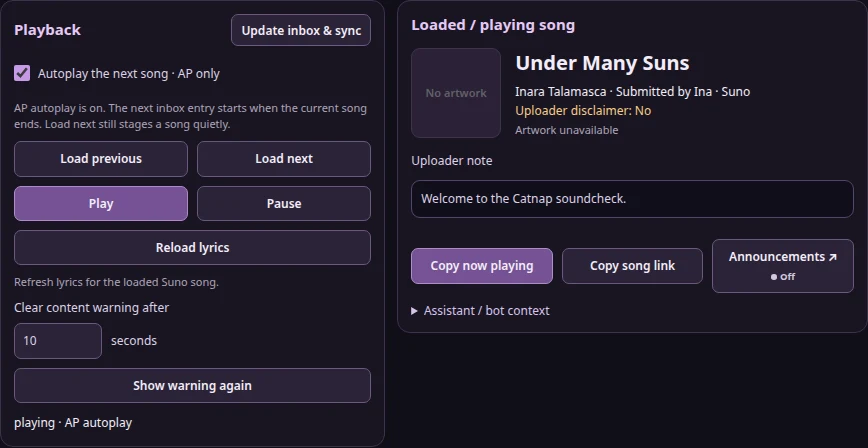

Host · with Len
Set up once.
Run your show.
Start with Theatre. Turn on Inbox, Radio, and Discord announcements only when you want them.
Current Host preview · 0.10.2 · AIU pilot distribution
Install the extension first
- Get the Host Preview ZIP from your AIU Admin or Protocol Agent. Ask for Host 0.10.2. Extract it to a folder you’ll keep.
- On desktop Chrome or Brave, open
chrome://extensionsorbrave://extensions. Turn on Developer mode and click Load unpacked. - Choose the Host folder containing
manifest.json. Pin Catnap in the toolbar. Open a Suno playlist and click Theatre.
The Host ZIP is distributed to the AIU pilot. Install or update it between broadcasts.
Optional · Inbox and Suno playlists*
Needs Suno MCP access and the Suno companion. The companion links Catnap to Suno for playlist reads and changes. You can skip it for Theatre, Media Board, Radio, and Discord announcements.
- Install the companion. Install Node.js 22 or newer, copy the Host extension ID from the browser’s Extensions page, and run the installer in the Host ZIP’s
nativefolder. - 1 · Suno In Theatre’s gear menu, open Inbox & show → Setup. Choose Connect Suno & load playlists and approve on Suno’s own screen.
- 2 · LP/AP & playlist Choose Listening Party or After Party. Create a playlist or choose an existing one. Open it in Suno from the setup step.
- 3 · Inbox Open and sign into the AIU Uploader in the same profile. Enable access, find your inbox, then choose Load inbox & sync this playlist.
- 4 · Theatre Select the opened playlist tab and choose Use this Theatre for the show.
Companion install by operating system
- Windows Open
native/install-windows.cmdand enter the Host extension ID and browser when prompted. - macOS Open Terminal in the extracted Host folder and run
bash native/install-macos.sh YOUR_EXTENSION_ID chrome. - Linux Open Terminal in the extracted Host folder and run
bash native/install-linux.sh YOUR_EXTENSION_ID chrome.
Replace YOUR_EXTENSION_ID with the exact ID shown in Extensions. Use brave in place of chrome for Brave.

Run the queue
- Under On show, Load next stages the song. Press Play when you’re ready. AP can autoplay.
- In Running order, move, hold, release, or mark a track Played. Use Add next for links you’re adding yourself.
- Use Update inbox & sync on show for a manual refresh. AP can also refresh the inbox and playlist automatically when enabled.
Optional · Broadcast music*
- Get your own casting key from an AIU Admin or Protocol Agent.
- Set the key under Setup → Radio settings, or in Catnap’s Radio window.
- Click the Catnap toolbar icon on the playing Suno or AIU Player tab and choose Start music broadcast. Confirm a takeover if another show is broadcasting.
- Share the Catnap listen page. Listeners can choose Radio on a phone and keep Discord voices audible.
Optional · Announce in Discord
Open the right text channel in Discord in this browser profile. In Theatre, open Announcements, select the channel, choose when to announce, and start. It uses your existing signed-in tab.
Optional · Add a visual
Open Media board from Presentation controls. Add a picture, GIF, MP4 or WebM, choose the stage, and tap its pad. For a break, open the lounge for AIU Radio, next-show details, or a Suno playlist link.
Accounts and helpers
Catnap doesn’t collect passwords. There’s no GPT or AI account step. AIU Inbox uses the AIU Uploader, playlist changes use Suno’s approval screen, Discord announcements use your open channel tab, and Radio uses your issued casting key.
* Inbox-to-playlist needs the workstation companion and Suno MCP. Music broadcast uses the Catnap hosted relay. Hosts don’t set up Docker.